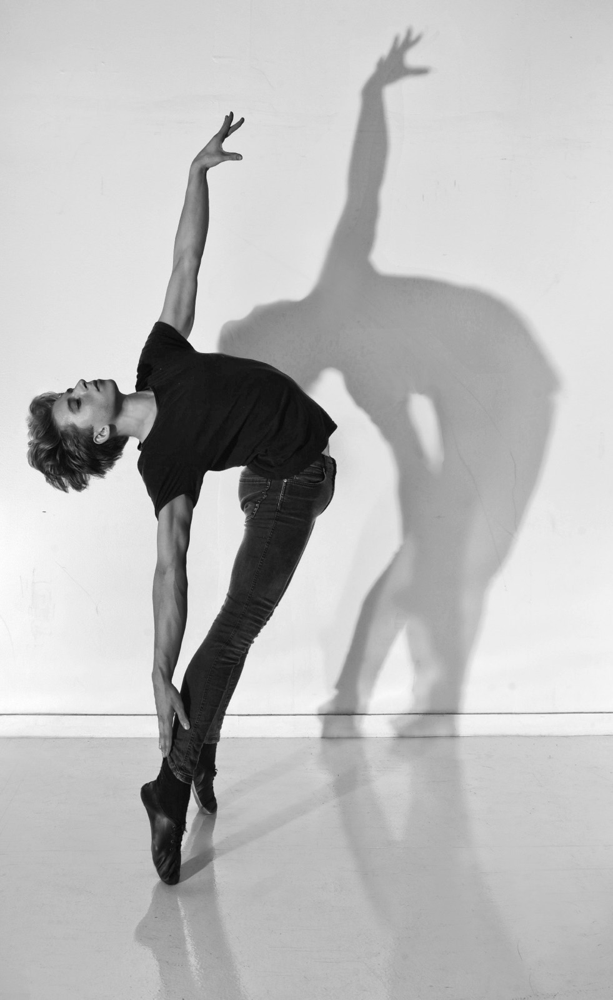

About Me
Maxim Voronin is a magician, contortionist, model, juggler, and stage director.
Born in San Francisco, California, Maxim was immersed in the world of cabaret and theater from an early age. As a second-generation artist, he followed in the illustrious footsteps of his parents, Yevgeniy Voronin—a world-class magician—and Svetlana Perekhodova—a one-of-a-kind contortionist. In 2022, Maxim graduated with honors from the Kyiv Municipal Academy of Variety and Circus Arts, earning distinction as a stage director and circus artist. He apprenticed under the renowned magician Johnny Thompson (Tomsoni & Co.) and spent four years learning from his father's magic teacher, Alexander Titarenko.
Maxim has performed in movies like Slava The Dog and Magic Hands of Chance, and you can see him on TV shows like Tu Si Que Vales and The Gong Show. He has modeled in fashion shows across Europe, Eastern Europe, Asia, and the USA.
By the age of 19, Maxim had directed and co-produced "History of Magic", the most acclaimed magic show in Ukraine, alongside Vladimir Koshevoy. To date, he has performed internationally and founded his own entertainment company.
Education
In 2022, Maxim completed the full college course at the Kyiv Municipal Academy of Variety and Circus Arts, earning two bachelor diplomas with honors in:
- Culture and Arts (Performing Arts)
- Culture and Arts (Directing of Variety, Theatrical Spectacle and Circus)


